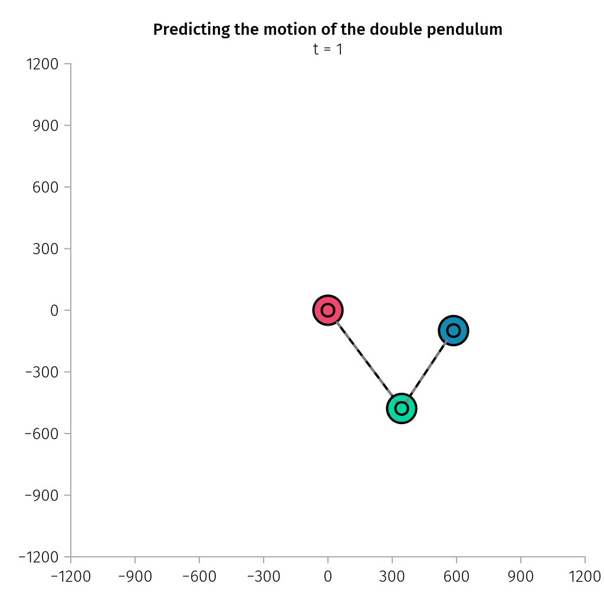

Learning the motion of a double pendulum
Data Loading
using DataDeps, CSV, MLUtils, DataFrames
using Printf
register(
DataDep(
"DoublePendulumChaotic",
"""
Dataset was generated on the basis of 21 individual runs of a double pendulum.
Each of the recorded sequences lasted around 40s and consisted of around 17500 frames.
* `x_red`: Horizontal pixel coordinate of the red point (the central pivot to the
first pendulum)
* `y_red`: Vertical pixel coordinate of the red point (the central pivot to the first
pendulum)
* `x_green`: Horizontal pixel coordinate of the green point (the first pendulum)
* `y_green`: Vertical pixel coordinate of the green point (the first pendulum)
* `x_blue`: Horizontal pixel coordinate of the blue point (the second pendulum)
* `y_blue`: Vertical pixel coordinate of the blue point (the second pendulum)
Page: https://developer.ibm.com/exchanges/data/all/double-pendulum-chaotic/
""",
"https://dax-cdn.cdn.appdomain.cloud/dax-double-pendulum-chaotic/2.0.1/double-pendulum-chaotic.tar.gz",
"4ca743b4b783094693d313ebedc2e8e53cf29821ee8b20abd99f8fb4c0866f8d";
post_fetch_method=unpack,
),
)
function get_data(; i=0, n=-1)
data_path = joinpath(datadep"DoublePendulumChaotic", "original", "dpc_dataset_csv")
df = CSV.read(
joinpath(data_path, "$i.csv"),
DataFrame;
header=[:x_red, :y_red, :x_green, :y_green, :x_blue, :y_blue],
)
n < 0 && return collect(Float32, Matrix(df)')
return collect(Float32, Matrix(df)')[:, 1:n]
end
function preprocess(x; Δt=1, nx=30, ny=30)
# move red point to (0, 0)
xs_red, ys_red = x[1, :], x[2, :]
x[3, :] -= xs_red
x[5, :] -= xs_red
x[4, :] -= ys_red
x[6, :] -= ys_red
# needs only green and blue points
x = reshape(x[3:6, 1:Δt:end], 1, 4, :)
# velocity of green and blue points
∇x = x[:, :, 2:end] - x[:, :, 1:(end - 1)]
# merge info of pos and velocity
x = cat(x[:, :, 1:(end - 1)], ∇x; dims=1)
# with info of first nx steps to inference next ny steps
n = size(x, ndims(x)) - (nx + ny) + 1
xs = Array{Float32}(undef, size(x)[1:2]..., nx, n)
ys = Array{Float32}(undef, size(x)[1:2]..., ny, n)
for i in 1:n
xs[:, :, :, i] .= x[:, :, i:(i + nx - 1)]
ys[:, :, :, i] .= x[:, :, (i + nx):(i + nx + ny - 1)]
end
return permutedims(xs, (3, 2, 1, 4)), permutedims(ys, (3, 2, 1, 4))
end
function get_dataloader(; n_file=20, Δt=1, nx=30, ny=30, ratio=0.9, batchsize=128)
xs, ys = Array{Float32}(undef, nx, 4, 2, 0), Array{Float32}(undef, ny, 4, 2, 0)
for i in 1:n_file
xs_i, ys_i = preprocess(get_data(; i=i - 1); Δt, nx, ny)
xs, ys = cat(xs, xs_i; dims=4), cat(ys, ys_i; dims=4)
end
data_train, data_test = splitobs(shuffleobs((xs, ys)); at=ratio)
trainloader = DataLoader(data_train; batchsize, shuffle=true, partial=false)
testloader = DataLoader(data_test; batchsize, shuffle=false, partial=false)
return trainloader, testloader
endModel
using Lux, NeuralOperators, Optimisers, Random, Reactant
const cdev = cpu_device()
const xdev = reactant_device(; force=true)
fno = FourierNeuralOperator(
(16, 4), 2, 2, 64; num_layers=6, activation=gelu, positional_embedding=:none
)
ps, st = Lux.setup(Random.default_rng(), fno) |> xdev;Training
trainloader, testloader = get_dataloader(; Δt=1, nx=30, ny=30) |> xdev;
function prediction_loss(model, x, ps, st, y)
return MSELoss()(first(model(x, ps, st)), y)
end
function train_model!(model, ps, st, trainloader, testloader; epochs=20)
train_state = Training.TrainState(model, ps, st, AdamW(; eta=3.0f-4, lambda=1.0f-5))
(xtest, ytest) = first(testloader)
prediction_loss_compiled = Reactant.with_config(;
convolution_precision=PrecisionConfig.HIGH,
dot_general_precision=PrecisionConfig.HIGH,
) do
@compile prediction_loss(
model, xtest, train_state.parameters, train_state.states, ytest
)
end
for epoch in 1:epochs
for data in trainloader
(_, _, _, train_state) = Training.single_train_step!(
AutoEnzyme(), MSELoss(), data, train_state; return_gradients=Val(false)
)
end
test_loss, nbatches = 0.0f0, 0
for (xtest, ytest) in testloader
nbatch = size(xtest, ndims(xtest))
nbatches += nbatch
test_loss +=
Float32(
prediction_loss_compiled(
model, xtest, train_state.parameters, train_state.states, ytest
),
) * nbatch
end
test_loss /= nbatches
@printf("Epoch [%3d/%3d]\tTest Loss: %12.6f\n", epoch, epochs, test_loss)
end
return train_state.parameters, train_state.states
end
ps_trained, st_trained = train_model!(fno, ps, st, trainloader, testloader; epochs=50);
nothing #hidePlotting
using CairoMakie, AlgebraOfGraphics
const AoG = AlgebraOfGraphics
AoG.set_aog_theme!()
x_data, y_data = preprocess(get_data(; i=20));
gt_data = cat([x_data[:, :, :, i] for i in 1:size(x_data, 1):size(x_data, 4)]...; dims=1)[
:, :, 1
]';
n = 5
inferenced_data = x_data[:, :, :, 1:1]
for i in 1:n
input_data = inferenced_data[:, :, :, i:i] |> xdev
prediction = first(
Reactant.with_config(;
convolution_precision=PrecisionConfig.HIGH,
dot_general_precision=PrecisionConfig.HIGH,
) do
@jit fno(input_data, ps_trained, st_trained)
end,
)
inferenced_data = cat(inferenced_data, cdev(prediction); dims=4)
end
inferenced_data = cat([inferenced_data[:, :, :, i] for i in 1:n]...; dims=1)[:, :, 1]'
begin
c = [
RGBf([239, 71, 111] / 255...),
RGBf([6, 214, 160] / 255...),
RGBf([17, 138, 178] / 255...),
]
xi, yi = [2, 4, 6], [1, 3, 5]
time = Observable(1)
gx_data = @lift [0, 0, gt_data[:, $(time)]...][xi]
gy_data = @lift [0, 0, gt_data[:, $(time)]...][yi]
ix_data = @lift [0, 0, inferenced_data[:, $(time)]...][xi]
iy_data = @lift [0, 0, inferenced_data[:, $(time)]...][yi]
fig = Figure(; size=(512, 512))
ax = Axis(
fig[1, 1];
title="Predicting the motion of the double pendulum",
subtitle=@lift("t = $($(time))"),
)
xlims!(ax, -1200, 1200)
ylims!(ax, -1200, 1200)
lines!(ax, gx_data, gy_data; color=:black, linewidth=2, linestyle=:solid)
scatter!(ax, gx_data, gy_data; color=c, markersize=35, strokewidth=2)
lines!(ax, ix_data, iy_data; color=:gray, linewidth=2, linestyle=:dash)
scatter!(ax, ix_data, iy_data; color=c, markersize=15, strokewidth=2)
record(
fig,
joinpath(@__DIR__, "double_pendulum.gif"),
1:size(inferenced_data, 2);
framerate=30
) do t
time[] = t
end
end